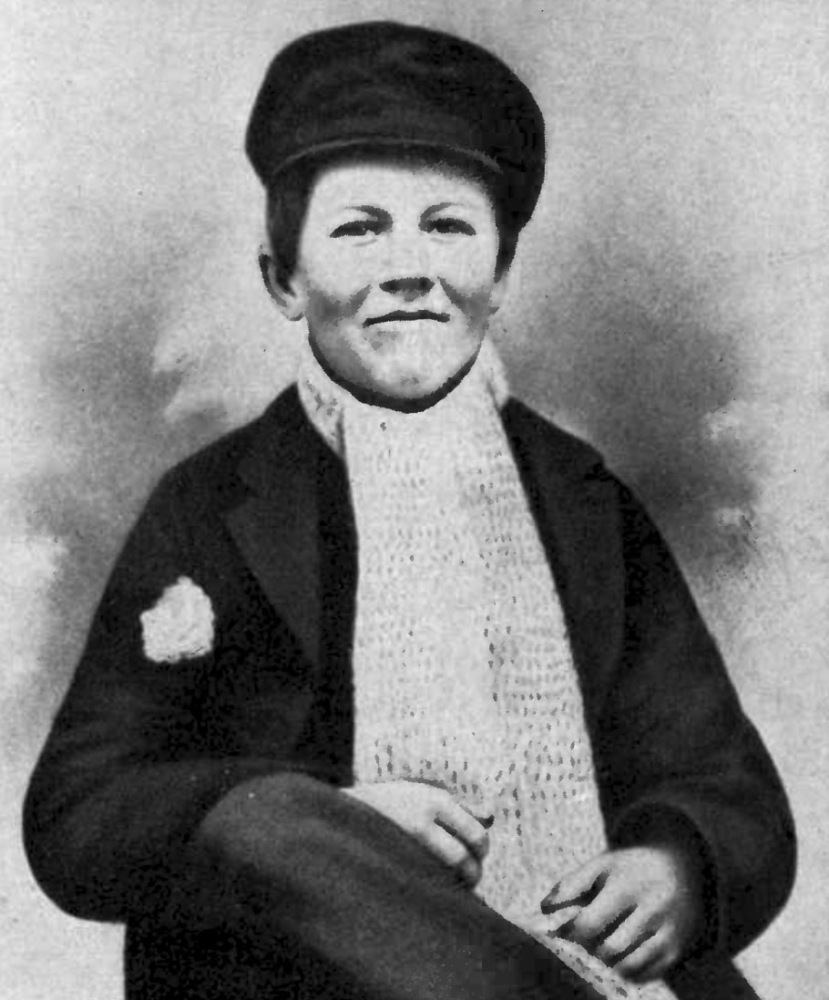

Томас Алва Едісон
То́мас А́лва Е́дісон (англ. Thomas Alva Edison; 11 лютого 1847 Майлен, Огайо, США — 18 жовтня 1931, Вест-Орандж, Нью-Джерсі, США) — американський науковець і винахідник, автор винаходів, на які видано 1093 патенти США та 1239 патентів інших країн[10]. Більшість своїх винаходів зробив у лабораторії в Менло-Парк у штаті Нью-Джерсі, протягом 1876–1887 років, включаючи створення лампи розжарення у 1879 році. Створив систему розподілу електроенергії споживачам, мікрофон для телефону, диктофон і фонограф. Він запропонував використовувати на початку телефонної розмови слово «алло».

Біографія
Томас Алва Едісон народився 11 лютого 1847 року в Огайо, США. З дитинства цікавився наукою та технікою, самостійно навчався. У юності працював телеграфістом, що допомогло йому розвинути інженерні навички. У 1876 році відкрив власну лабораторію в Менло-Парку, де створив багато винаходів, зокрема фонограф і вдосконалив лампу розжарення. Едісон отримав понад 1000 патентів і зробив значний внесок у розвиток електротехніки та зв'язку. Помер 18 жовтня 1931 року в Нью-Джерсі.
Дитячі та юнацькі роки
Томас Едісон народився 11 лютого 1847 року в місті Мілан, штат Огайо, США. У дитинстві він мав цікавість до науки та експериментів, багато читав і проводив досліди вдома. Через проблеми зі слухом і нестандартний підхід до навчання, більшу частину освіти отримав вдома під керівництвом матері.
Зріле життя
У 1869 році Едісон переїхав до Нью-Йорка, де почав працювати як телеграфіст. Його інженерні здібності швидко привернули увагу, і він отримав перші замовлення на розробку електричних пристроїв. У 1876 році відкрив лабораторію в Менло-Парку, де створив багато винаходів, зокрема фонограф і вдосконалив лампу розжарення.